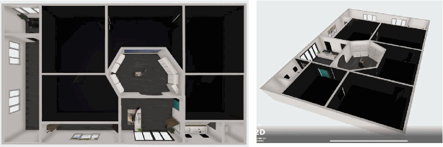

Antes de la visita
El profesorado organiza la salida y puede vincular el destino con lo que está trabajando en el aula.
Experiencia inmersiva · Madrid
Descubre otras culturas a través de sus paisajes, sonidos, aromas, texturas y sabores. Una excursión para aprender juntos sin salir de Madrid.
Probar la experienciaEl recorrido
Cada semestre, un destino distinto. Entra en la maqueta 3D y descubre cómo funcionaría una visita a Japón con tu grupo.
Maqueta interactiva
Recreación visual de la sala
Selecciona una zona del local.
Plano esquemático del prototipo · Entrada por recepción
Comienzo · Japón
Tu grupo llega a recepción. El equipo os presenta Japón y os explica cómo recorrer las cinco estaciones.
Para centros educativos
Una salida para Secundaria y Bachillerato que conecta la geografía, la historia y la diversidad cultural con una experiencia compartida.
Preparar una visita escolarEl profesorado organiza la salida y puede vincular el destino con lo que está trabajando en el aula.
El equipo acompaña al grupo a través de las proyecciones, los juegos y las actividades de las cinco estaciones.
El grupo comparte lo que ha descubierto. El profesorado puede continuar el aprendizaje con materiales de seguimiento.
Dónde estamos
Ubicación prevista en la Comunidad de Madrid. Dirección del local pendiente de confirmar.

Entradas · Precios orientativos del proyecto
Explora las modalidades y calcula el importe estimado para tu grupo.